Использование фильтра Canvas для создания фона
Когда я думал, как назвать этот урок, полета моей фантазии не хватило, чтобы придумать какое-то «красочное название», которое отражало бы суть урока, поэтому назвал его как сумел :)
Но это «лирическое отступление»…
В этом уроке мы рассмотрим создание абстрактного фона для статуи, хотя подобным образом можно создавать фон не только для статуй. Этот урок также продемонстрирует тот факт, что в Photo-Paint можно довольно легко создавать довольно привлекательные коллажи.
На рис. 1 показано исходное изображение (к сожалению, в моем арсенале не оказалось более выразительной статуи, чем эта).
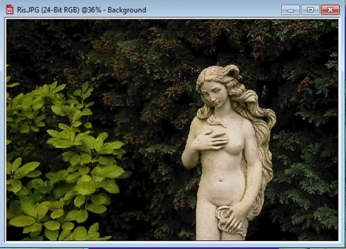
Оригинальный файл имеет размеры 1536х1024 px и имеет разрешение 72 dpi. По понятным причинам выложить такое изображение в уроке не представляется возможным, поэтому я буду использовать скриншоты, хотя это может повлечь за собой некоторое ухудшение рисунков. Однако вы можете взять при желании исходное изображение в прикрепленных файлах, используя его в качестве «образца», если решите повторить дома описанные ниже действия.
1. Естественно, первый шаг – создание маски. Нам нужно выделить статую. Я не буду здесь описывать, как это делать, надеюсь, вы с этим легко справитесь. После создания маски, сделайте из статуи выделенной статуи объект, нажав Ctrl + стрелка вверх. Наша статуя появится в докере Objects (Объекты). При необходимости, в докере щелкните на фоне, чтобы сделать его активным.
2. В экранной цветовой палитре выберите оранжевый цвет заливки, для чего щелкните правой кнопкой мыши на ячейке оранжевого цвета. Активизируйте инструмент Fill (Заливка), нажав клавишу F и залейте фон оранжевым цветом. У вас должно получиться, как на рис. 2.
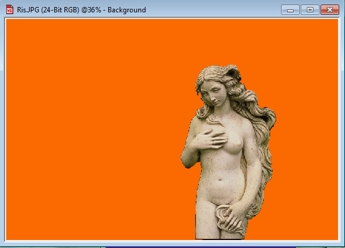
3. Теперь добавим к изображению текстуру. Для этого выполните команду Effects > Texture > Canvas (Эффекты > Текстура > Холст). В диалоговом окне Canvas (Холст), выберите образец холста и установите значение параметров, как на рис. 3.
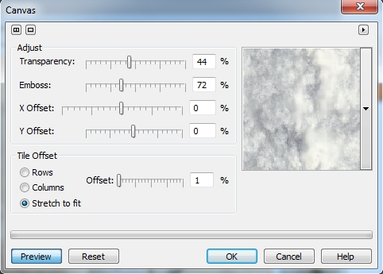
После применения этого фильтра, у вас изображение станет, как на рис. 4.
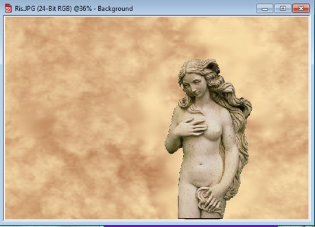
4. После этого, выполните команду Effects > Texture > Canvas (Эффекты > Текстура > Холст) еще раз. Т. к. этот фильтр запоминает последние использованные настройки, то просто щелкните в нем ОК. Если же по каким-то причинам, у вас настройки в фильтре сбились, то используйте те, которые показаны на рис. 3. Полученный результат показан на рис. 5.
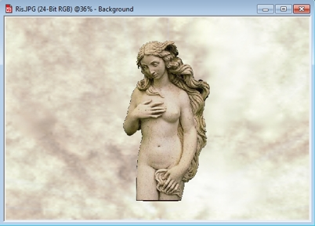
5. Теперь нам нужно сделать эффект «постепенного появления» статуи из фона. Для этого я использовал два инструмента: Object Transparency Brush (Кисть прозрачности объекта) и Object Transparency (Прозрачность объекта). Оба эти инструмента находятся на панели Toolbox (Набор инструментов), в группе инструментов Interactive/Transparency Tools (Инструменты интерактивной прозрачности).
Сначала я использовал инструмент Object Transparency (Прозрачность объекта). Если вы им раньше не пользовались, то могу сказать, что он очень напоминает инструмент Интерактивная заливка, я имею ввиду технику работы с ним.
Но чтобы работать с этими инструментами, необходимо выделить объект-статую, потому что эти инструменты работают исключительно с объектами и на фон не оказывают никакого влияния. «Протащите» этот инструмент немного по диагонали слева снизу – вправо вверх, как на рис. 6.
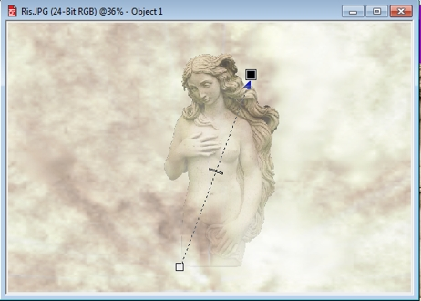
Для начальной точки прозрачности установите на Панели свойств, в счетчике Transparency (Прозрачность) значение 90, а для конечной точки – значение Transparency (Прозрачность) = 27.
Если вы никогда не работали с этим инструментом, то установка значения прозрачности для этих двух точек выполняется следующим образом. Сначала щелкните на квадратике, соответствующем начальной/конечной точке, а затем на Панели свойств установите значение.
6. Теперь размоем объект-статую, чтобы создать очень плавный переход от объекта к фону. Выполните команду Object > Feather (Объект > Размыть края). В счетчике Width (Ширина) установите значение 30, а в раскрывающемся списке Edges (Края) выберите тип края Curved (Скругленные).
На рис. 7 видно, что некоторые части статуи резко выделяются на фоне, что не очень соответствует нашему замыслу. На скриншоте эти места может не очень заметны (я их обвел кружками), из-за маленького масштаба, однако на исходном изображении это очень заметно.
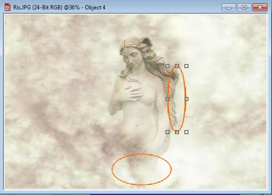
7. Чтобы создать плавный переход и скрыть места внизу статуи, я обработал их инструментом Object Transparency Brush (Кисть прозрачности объекта). Меняя на Панели свойств значение Transparency (Прозрачности), примерно от 20 до 50 и используя мягкую кисть, я обработал указанные места статуи. Следует отметить, что, чем больше значение, тем более непрозрачным становится объект, хотя из названия счетчика можно было бы подумать об обратном.
Конечный результат показан на рис. 8.
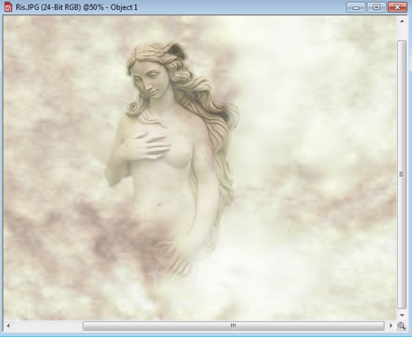
8. Однако мне кажется, он очень светлый. По крайней мере, я решил добавить немного контраста. Для этого я использовал фильтр Tone curve (Цветовая кривая) (рис. 9). Для этого, я в докере Objects (Объекты) выделил фон и применил фильтр.
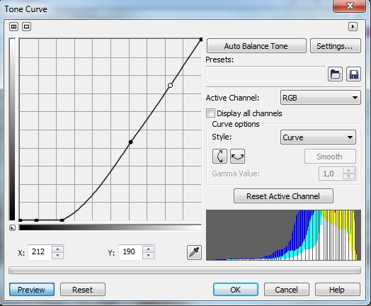
Окончательный вариант показан на рис. 10.
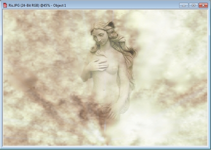
Т. к. размер фона слишком велик по сравнению с самой статуей, она выглядит несколько «скромно» на таком пространстве. Кроме того, вы можете решить скрыть половину туловища. Другими словами, вы можете модифицировать конечный результат по своему вкусу, обрезать изображение, изменить контраст, прозрачность и т. п.
Пример такого небольшого изменения к конечному результату показан на рис. 11.
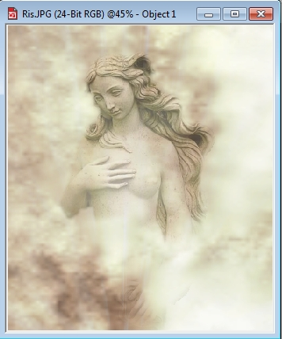
Здесь я обрезал часть фона, т. к. он был великоват и дополнительно скрыл часть туловища с помощью инструмента Object Transparency Brush (Кисть прозрачности объекта).
Как видите, в Photo-Paint достаточно легко создать довольно привлекательное изображение.